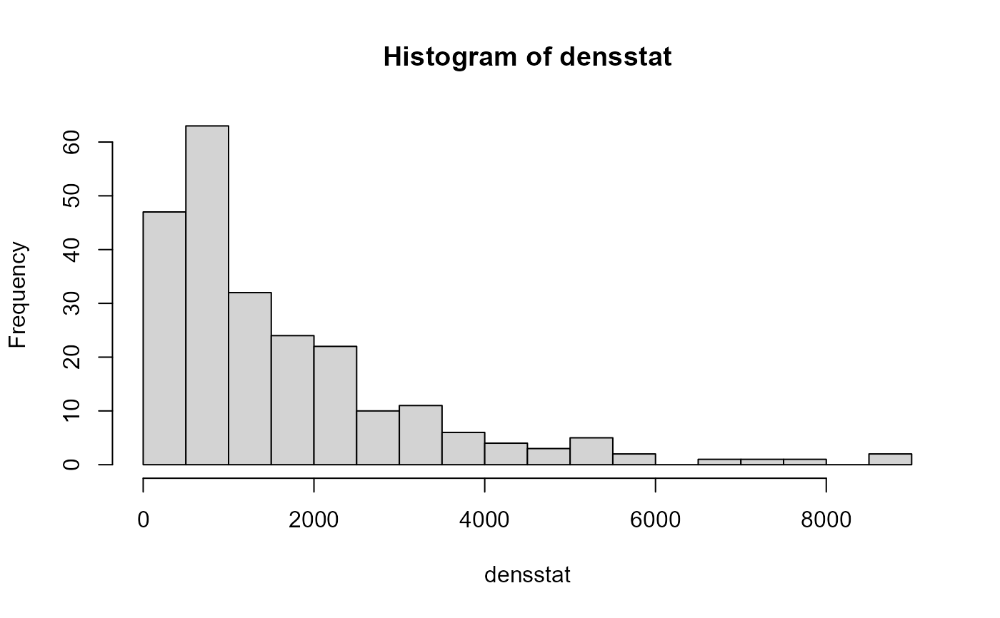
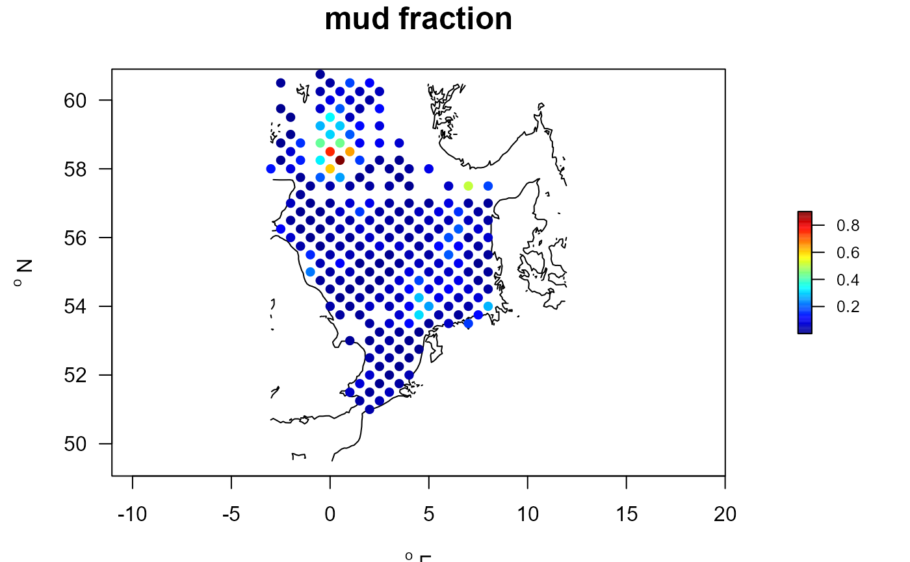
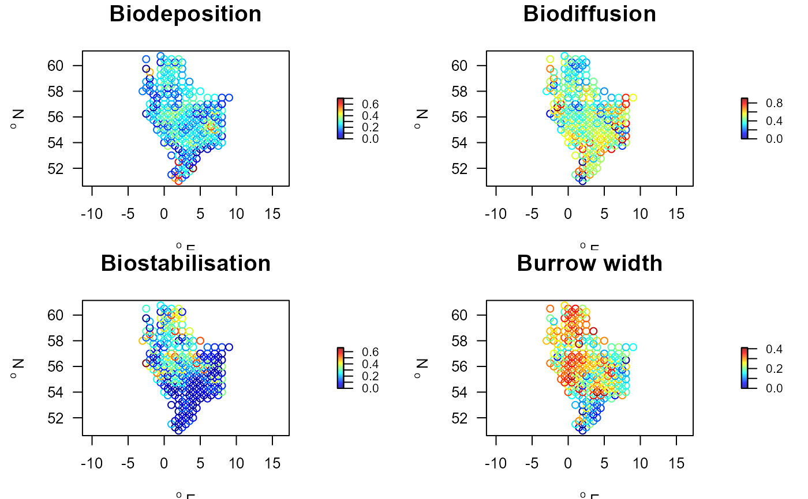
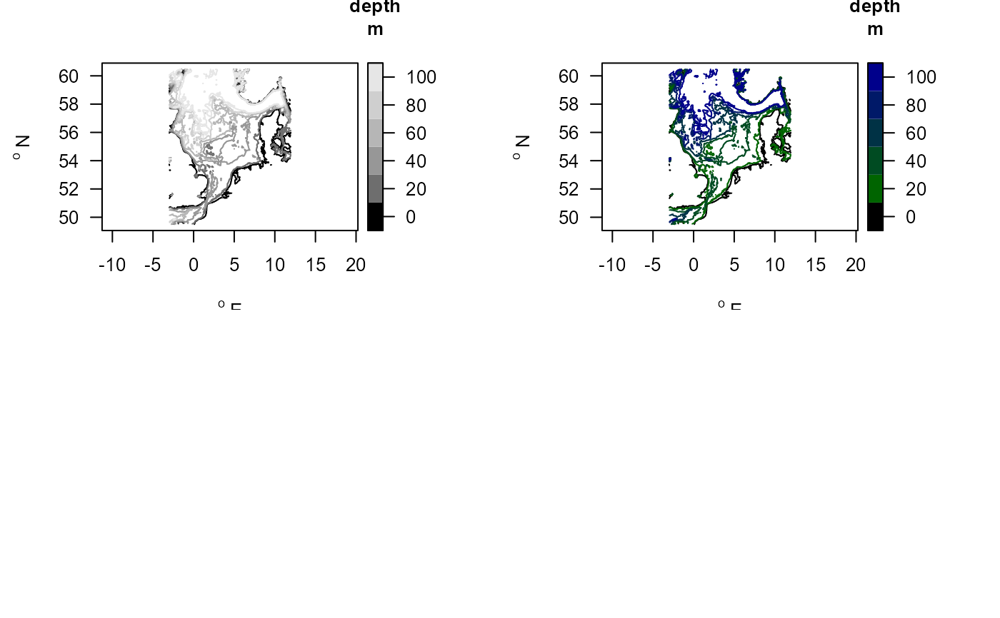

The ICES northsea benthic survey (NSBS) from 1986, including abiotic conditions.
NSBSdensitydata.RdThe NSBS Northsea macrobenthos data (1986).
Samples are within (-3 and 9) dgE and (51.00 60.75) dgN
The data contain:
Macrofauna species density and biomass (
NSBS$density)Abiotic conditions (
NSBS$abiotics), and station positions (NSBS$stations)NSBS$contours: contourlines for mapping.
Usage
data(NSBS)Format
==================
**NSNS$density**:
This is the main Northsea NSBS benthos data set, containing species
information for 234 stations sampled in 1985-1986.
The data, in long format, are in a data.frame with the following columns:
station, the NSBS station name (details in NSBS$stations).date, the sampling date. Note, this is a string; it can be converted to POSIXct by: "as.POSIXct(NSBS$density$date, format='%d-%m-%Y')". The year can be extracted as1900+as.POSIXlt(NSBS$density$date, format='%d-%m-%Y')$year.year, the year of samplingtaxon, the taxon name to be used (usually species), and checked against the worms database (details in datasetTaxonomy).density, the number of individuals per m2.biomass, the total biomass per m2, in AFDW/m2 (ash-free dry weight).
==================
**NSBS$abiotics**:
the abiotic conditions of sampling stations.
NSBS$abiotics is a data.frame with the following columns:
station, the NSBS station name
depth, water depth [m]
mud, mud content of sediment, fraction [-]
porosity, volumetric water content [-]
permeability, sediment permeability [m2]
max.currentspeed, maximum current speed [m/s]
==================
**NSBS$stations**:
The positions of the different stations, in WGS84 format
station, the NSBS station name
x, degrees longitude
y, degrees latitude
==================
**NSBS$contour**:
The data for mapping the contours. The contourlines (x-, y) were derived from GEBCO high-resolution bathymetry, by creating contourlines.
The data set contains:
station, the NSBS station name
x: longitude, in [dgE]
y: latitude, in [dgN]
z: the corresponding depths, in [m]
Note
The dataset **Taxonomy**:
contains taxonomic information of the original and adjusted taxon in NSBS$density,
as derived from the World Register of Marine Species (WORMS), using R-package worms.
Details
NSBS contains the macrofauna data from the 1986 North Sea Benthos Survey, an activity of the Benthos Ecology Working Group of ICES.
Benthic samples were taken in a standardised way, on a regular grid covering the whole of the North Sea, and analysed by scientists from 10 laboratories. Extensive work was done to standardise taxonomy and identifications across the different laboratories.
Sediment was sampled with a Reineck Boxcorer (0,078 m2). Macrofauna sieved on a 1 mm mesh.
References
The taxonomic information was created using the worms package:
Jan Holstein (2018). worms: Retrieving Aphia Information from World Register of Marine Species. R package version 0.2.2. https://CRAN.R-project.org/package=worms
Heip, C.H.R.; Basford, D.; Craeymeersch, J.A.; Dewarumez, J.-M.; Dorjes, J.; de Wilde, P.; Duineveld, G.; Eleftheriou, A.; Herman, P.M.J.; Kingston, K.; Niermann, U.; Kunitzer, A.; Rachor, E.; Rumohr, H.; Soetaert, K.; Soltwedel, T. (1992). Trends in biomass, density and diversity of North Sea macrofauna. ICES J. Mar. Sci./J. Cons. int. Explor. Mer 49: 13-22
See also
mapBtrait for plotting.
Traits_nioz for the trait datasets.
getDensity for functions operating on these data.
getDbIndex for extracting bioturbation and bioirrigation indices.
long2wide for functions changing the appearance on these data.
Examples
##-----------------------------------------------------
## Show contents of the data set
##-----------------------------------------------------
metadata(NSBS$abiotics)
#> name description units
#> 1 depth water depth m
#> 2 D50 Median grain size micrometer
#> 3 mud mud fraction (<63 um) -
#> 4 sand sand fraction (64 -2000 um) -
#> 5 gravel gravel fraction (>2000 um) -
#> 6 salinity salinity
#> 7 porosity volumetric water content -
#> 8 permeability permeability m2
#> 9 POC particulate organic C in sediment %
#> 10 TN total N in sediment %
#> 11 surfaceCarbon particulate organic C in upper cm %
#> 12 surfaceNitrogen total N in upper cm %
#> 13 orbitalVelMean mean orbital velocity m/s
#> 14 orbitalVelMax maximal orbital velocity m/s
#> 15 tidalVelMean mean tidal velocity m/s
#> 16 tidalVelMax maximal tidal velocity m/s
#> 17 bedstress bed shear stress Pa
#> 18 EUNIScode EUNIScode -
#> 19 SAR swept area ratio (fisheries) m2/m2/year
metadata(NSBS$density)
#> name description units
#> 1 station station name
#> 2 date sampling date, a string
#> 3 taxon taxon name, checked by worms, and adjusted
#> 4 density species total density individuals/m2
##-----------------------------------------------------
## SPECIES data
##-----------------------------------------------------
head(NSBS$density)
#> station date taxon density
#> 1 ICES002 1986 Clitellata 1.0
#> 2 ICES002 1986 Thecostraca 24.0
#> 3 ICES003 1986 Ophiura albida 1.3
#> 4 ICES003 1986 Thecostraca 278.0
#> 5 ICES003 1986 Abludomelita 1.3
#> 6 ICES003 1986 Glycera 6.3
# The number of species per station (over all years)
Nspecies <- tapply(X = NSBS$density$taxon,
INDEX = NSBS$density$station,
FUN = function(x)length(unique(x)))
summary(Nspecies)
#> Min. 1st Qu. Median Mean 3rd Qu. Max.
#> 1.00 30.25 43.00 43.09 55.75 96.00
# The number of times a species has been found
Nocc <- tapply(X = NSBS$density$station,
INDEX = NSBS$density$taxon,
FUN = length)
head(sort(Nocc, decreasing = TRUE)) #most often encountered taxa
#> Spiophanes bombyx Scoloplos armiger Pholoe Goniada maculata
#> 217 196 188 185
#> Ampharetidae Amphiura filiformis
#> 183 183
# total density per station
densstat <- tapply(X = NSBS$density$density,
INDEX = list(NSBS$density$station),
FUN = sum)
hist(densstat, n=30)

##-----------------------------------------------------
## ABIOTICS
##-----------------------------------------------------
summary(NSBS$abiotics)
#> station depth D50 mud
#> Length:235 Min. : 4.20 Min. :0.03516 Min. :0.0002652
#> Class :character 1st Qu.: 34.75 1st Qu.:0.14024 1st Qu.:0.0139084
#> Mode :character Median : 57.50 Median :0.18710 Median :0.0349855
#> Mean : 63.76 Mean :0.29469 Mean :0.0771892
#> 3rd Qu.: 84.85 3rd Qu.:0.27823 3rd Qu.:0.0872650
#> Max. :195.20 Max. :5.58824 Max. :0.9003331
#> NA's :3 NA's :1 NA's :1
#> sand gravel porosity permeability
#> Min. : 9.86 Min. :0.0000000 Min. :0.3661 Min. :-4.771e-08
#> 1st Qu.:85.57 1st Qu.:0.0005157 1st Qu.:0.3925 1st Qu.: 0.000e+00
#> Median :93.09 Median :0.0055984 Median :0.4110 Median : 0.000e+00
#> Mean :88.38 Mean :0.0389908 Mean :0.4202 Mean : 8.635e-08
#> 3rd Qu.:96.71 3rd Qu.:0.0350953 3rd Qu.:0.4358 3rd Qu.: 1.000e-12
#> Max. :99.97 Max. :0.5836318 Max. :0.7029 Max. : 1.688e-05
#> NA's :1 NA's :1
#> POC TN surfaceCarbon surfaceNitrogen
#> Min. :0.04682 Min. :0.01100 Min. :0.07304 Min. :0.01815
#> 1st Qu.:0.22743 1st Qu.:0.03796 1st Qu.:0.35539 1st Qu.:0.05845
#> Median :0.29917 Median :0.04300 Median :0.46386 Median :0.06793
#> Mean :0.33695 Mean :0.04895 Mean :0.50761 Mean :0.07394
#> 3rd Qu.:0.41622 3rd Qu.:0.05631 3rd Qu.:0.64319 3rd Qu.:0.08698
#> Max. :1.02022 Max. :0.12488 Max. :1.40612 Max. :0.20045
#> NA's :1 NA's :1 NA's :1 NA's :1
#> orbitalVelMean orbitalVelMax tidalVelMean tidalVelMax
#> Min. :0.003484 Min. :0.06843 Min. :0.07054 Min. :0.1619
#> 1st Qu.:0.020203 1st Qu.:0.19295 1st Qu.:0.13072 1st Qu.:0.2938
#> Median :0.037795 Median :0.32866 Median :0.16890 Median :0.3936
#> Mean :0.053431 Mean :0.40298 Mean :0.21072 Mean :0.4741
#> 3rd Qu.:0.063635 3rd Qu.:0.51756 3rd Qu.:0.25985 3rd Qu.:0.5859
#> Max. :0.660648 Max. :2.74205 Max. :0.60274 Max. :1.2783
#> NA's :1 NA's :1 NA's :1 NA's :1
#> bedstress EUNIScode SAR
#> Min. :0.00213 Length:235 Min. : 0.004772
#> 1st Qu.:0.07000 Class :character 1st Qu.: 0.155010
#> Median :0.14000 Mode :character Median : 0.447977
#> Mean :0.30296 Mean : 1.048422
#> 3rd Qu.:0.33500 3rd Qu.: 1.339842
#> Max. :2.58000 Max. :20.729284
#> NA's :3 NA's :1
NSBSab <- merge(NSBS$stations, NSBS$abiotics)
with(NSBSab, mapBtrait(x, y, colvar=mud, contours=NSBS$contours,
pch=16, main="mud fraction"))

metadata(NSBS$abiotics)
#> name description units
#> 1 depth water depth m
#> 2 D50 Median grain size micrometer
#> 3 mud mud fraction (<63 um) -
#> 4 sand sand fraction (64 -2000 um) -
#> 5 gravel gravel fraction (>2000 um) -
#> 6 salinity salinity
#> 7 porosity volumetric water content -
#> 8 permeability permeability m2
#> 9 POC particulate organic C in sediment %
#> 10 TN total N in sediment %
#> 11 surfaceCarbon particulate organic C in upper cm %
#> 12 surfaceNitrogen total N in upper cm %
#> 13 orbitalVelMean mean orbital velocity m/s
#> 14 orbitalVelMax maximal orbital velocity m/s
#> 15 tidalVelMean mean tidal velocity m/s
#> 16 tidalVelMax maximal tidal velocity m/s
#> 17 bedstress bed shear stress Pa
#> 18 EUNIScode EUNIScode -
#> 19 SAR swept area ratio (fisheries) m2/m2/year
##-----------------------------------------------------
## COMBINATIONS
##-----------------------------------------------------
NSsp_abi <- merge(NSBS$density, NSBS$abiotics)
ECH <- subset(NSsp_abi, subset=taxon=="Echinocardium cordatum")
with(ECH, plot(mud, density, pch=16, main="E. cordatum",
xlab="mud fraction", ylab="density, ind/m2"))
# add station coordinates
ECH <- merge(ECH, NSBS$stations)
##-----------------------------------------------------
## From long format to wide format (stations x species)
##-----------------------------------------------------
NSwide <- with (NSBS$density,
l2wDensity(descriptor = station, # long2wide for density
taxon = taxon,
value = density))
PP <- princomp(t(NSwide[,-1]))
if (FALSE) {
biplot(PP)
}
##-----------------------------------------------------
## Community mean weighted score for traits.
##-----------------------------------------------------
# Traits estimated for absences, by including taxonomy
Trait.lab <- metadata(Traits_nioz)
trait.cwm <- getTraitDensity(wide = NSwide,
trait = Traits_nioz,
taxonomy = NSBS$taxonomy,
trait.class = Trait.lab$trait,
trait.score = Trait.lab$score,
scalewithvalue = TRUE)
head(trait.cwm, n=c(3,4))
#> descriptor Age.at.maturity Annual.fecundity Biodeposition
#> 1 ICES002 0.2466667 0.4373333 0.6000000
#> 2 ICES003 0.2898844 0.4404432 0.5120424
#> 3 ICES004 0.1556037 0.3284367 0.1960335
Stations.traits <- merge(NSBS$stations, trait.cwm,
by.x="station", by.y="descriptor")
par(mfrow=c(2,2))
with(Stations.traits, mapBtrait(x, y, colvar=Biodeposition,
main="Biodeposition"))
with(Stations.traits, mapBtrait(x, y, colvar=Biodiffusion,
main="Biodiffusion"))
with(Stations.traits, mapBtrait(x, y, colvar=Biostabilisation,
main="Biostabilisation"))
with(Stations.traits, mapBtrait(x, y, colvar=Burrow.width,
main="Burrow width"))

##-----------------------------------------------------
## Community mean weighted score for typological groups.
##-----------------------------------------------------
# Groups is in crisp format -> convert to fuzzy
Groups.fuz <- crisp2fuzzy(Groups[,c("taxon", "typology")])
head (Groups, n=2)
#> taxon Functional.group typology description
#> 1 Nephrops norvegicus 11 Deep3D Deep 3D burrower
#> 2 Upogebia deltaura 11 Deep3D Deep 3D burrower
head (Groups.fuz, n=c(2,5))
#> taxon typology_Deep3D typology_DeepTub typology_Epi3D
#> 1 Nephrops norvegicus 1 0 0
#> 2 Upogebia deltaura 1 0 0
#> typology_Foul
#> 1 0
#> 2 0
group.cwm <- getTraitDensity(wide = NSwide,
trait = Groups.fuz,
scalewithvalue = TRUE)
head(group.cwm, n=c(3,4))
#> descriptor typology_Deep3D typology_DeepTub typology_Epi3D
#> 1 ICES002 0 0.00000000 0
#> 2 ICES003 0 0.00000000 0
#> 3 ICES004 0 0.06191872 0
summary(group.cwm)
#> descriptor typology_Deep3D typology_DeepTub typology_Epi3D
#> Length:234 Min. :0.00000 Min. :0.00000 Min. :0.00000
#> Class :character 1st Qu.:0.00000 1st Qu.:0.01365 1st Qu.:0.00000
#> Mode :character Median :0.00000 Median :0.05694 Median :0.00000
#> Mean :0.00303 Mean :0.10945 Mean :0.00147
#> 3rd Qu.:0.00000 3rd Qu.:0.14237 3rd Qu.:0.00000
#> Max. :0.07873 Max. :0.86668 Max. :0.13739
#> typology_Foul typology_MajBiot typology_MinBiot typology_Neutral
#> Min. :0.000000 Min. :0.00000 Min. :0.00000 Min. :0.000000
#> 1st Qu.:0.000000 1st Qu.:0.06253 1st Qu.:0.04029 1st Qu.:0.000000
#> Median :0.003142 Median :0.11540 Median :0.07770 Median :0.000000
#> Mean :0.051520 Mean :0.13321 Mean :0.10534 Mean :0.003535
#> 3rd Qu.:0.023905 3rd Qu.:0.17352 3rd Qu.:0.13164 3rd Qu.:0.000000
#> Max. :1.000000 Max. :0.55688 Max. :0.62949 Max. :0.094942
#> typology_SesBiot typology_ShalShel typology_SmalTub typology_SurfDiff
#> Min. :0.00000 Min. :0.00000 Min. :0.00000 Min. :0.00000
#> 1st Qu.:0.01020 1st Qu.:0.02826 1st Qu.:0.03659 1st Qu.:0.09536
#> Median :0.07073 Median :0.08966 Median :0.07601 Median :0.17046
#> Mean :0.13557 Mean :0.12035 Mean :0.11163 Mean :0.22490
#> 3rd Qu.:0.23378 3rd Qu.:0.17512 3rd Qu.:0.16814 3rd Qu.:0.31458
#> Max. :0.74574 Max. :0.76394 Max. :0.47913 Max. :0.85365
##-----------------------------------------------------
## Show the depth contours
##-----------------------------------------------------
mapBtrait(contours=NSBS$contours, draw.levels=TRUE, key.levels=TRUE)
# Use a different color scheme
collev <- function(n) c("black",
ramp.col(col=c("darkgreen", "darkblue"), n=n-1))
mapBtrait(contours=NSBS$contours, draw.levels=TRUE, col.levels=collev,
key.levels=TRUE)
